Create Advanced Data Analysis
Open Modules > Catalogs > Functions Catalog to maintain reusable functions. A configured Python service and the libraries used by the script are required. Preview the function with representative input before exposing its output in a document.
Knowage supports advanced data analysis allowing you to extract knowledge from large volumes of data, to improve your decision-making and business strategies. In particular, Knowage Data Mining Engine integrates Python scripting capabilities.
Thanks to this functionality, it is possible to execute Python scripts in an interactive way and enrich traditional datasets with new information. This means that it allows users to perform statistical or data mining analysis on different Knowage datasets.
The data scientists can thus integrate its own algorithm within Knowage and deliver their output to the end user, together with new advanced visualization options useful to discover meaningful insights hidden in the data.
The Catalog Function features leverage on the Python Engine. To understand how to install and configure it, please refer to the Python installation
Functions Catalog
In this section we will see how to explore and handle the Functions framework., while in Use a function inside documents we will see how to use functions. First click on the Functions menu under the Catalogs section from the Knowage main page as shown below.
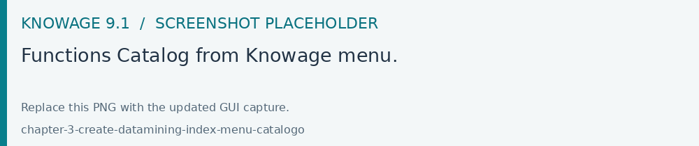
Fig. 470 Functions Catalog from Knowage menu.
You will enter a page like the one shown in figure below.
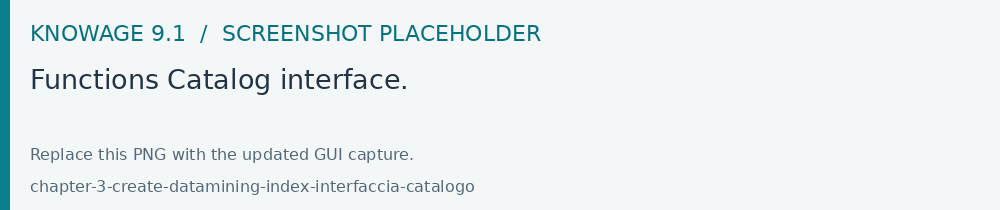
Fig. 471 Functions Catalog interface.
The actions that a user can perform depend on the user’s role. However, independently from the user’s role, in the interface all functions are shown by default. Referring to the figure above, the page is composed by:
categories: these are set by an administrator user and are used to classify the functions accordingly to their definition and goals. Moreover they help in browsing the functions; only the admin user can add and/or modify categories.
search: to easily search for a specific functions in the list;
list of functions (if there are any): these are visible and explorable by any kind of user. Anyway only an admin user can add and/or modify them.
Hint
Add or modify the categories
The admin can add a new category using the Domain management available on Knowage Server under the Server Settings section. To know more about this section, please refer to Section “Server settings” under the Installation and configuration section.
The categories for functions depends on an admin user. Taking Functions Catalog interface figure as an example, we have:
Text Analysis: makes sense of unstructured text,
Machine Learning: teachs your app to teach itself,
Computer Vision: identifies objects in images,
Utilities: ready to use microservices,
All: visualizes all your functions; this is the only category that cannot be changed or removed.
It is possible to search for a specific function in two ways: using the categories and clicking on one of them in order to filter the functions list or using the search box on the top of th list.
A preview of the function can be executed using the icon 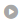 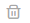


To create a new function an admin user must click on the “Plus” icon available at the top right corner of the page. The action opens the interface shown below. Here you have four tabs that we describe shortly in the following subsections.
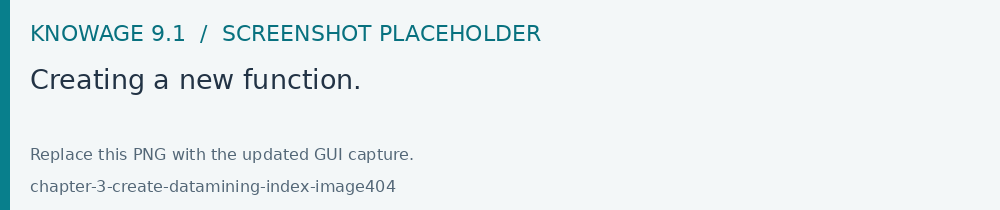
Fig. 472 Creating a new function.
The General tab
In this tab the user gives the general information about the function as the figure above shows. The admin user must type: the name of the function, the label with which it is identified uniquely (remember to use only numbers or letters and do not leave spaces between them) and the type that is the function category. The keywords are tags that can be assigned to a function, searching for a specific tag in the search box will retrive all the functions that have that tag. In order to add a new keyword you have to write the desired text and then press the submit button on the pc keyboard. The Description is where the user can insert a long text or images to be shown when the function is being configured inside documents. In the Benchmarks field users can insert information about the function performances.
The Input tab
As shown in the following figure, the function admits two kinds of input: columns and variables.
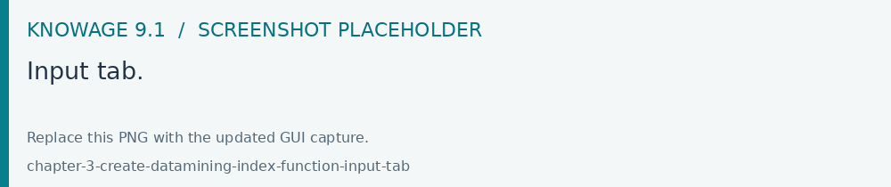
Fig. 473 Input tab.
In the “Column” instance the function takes input columns that will be referenced inside the script. These columns are generic, the user must only specify their type and the name he later wants to use inside the script to access that specific column.
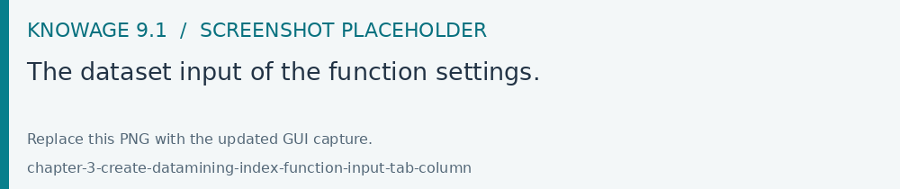
Fig. 474 The dataset input of the function settings.
In the “Variable” case, the user must insert one or more variables and match them with values using the dedicated area.
The Script tab
The script tab is where an expert user defines the function through the usage of datamining languages (such as Python), as shown in Figure below.
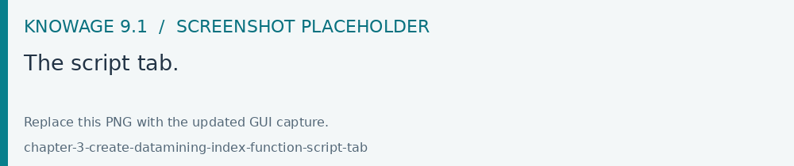
Fig. 475 The script tab.
Inside the script users will have at their disposal a read-only pandas.Series variable for each column defined in the input tab. To reference one specific column users must use the placeholder ${column_name}. Input variables will be accessible with the same syntax.
1 ${column_name}
2 ${variable_name}
Warning
Input variables are read only
If you want to manipulate them you should first make a local copy and work on it.
The script will have to produce as output one or more pandas.Series variables and will store them inside the corresponding output placeholders. The following is an example of function template.
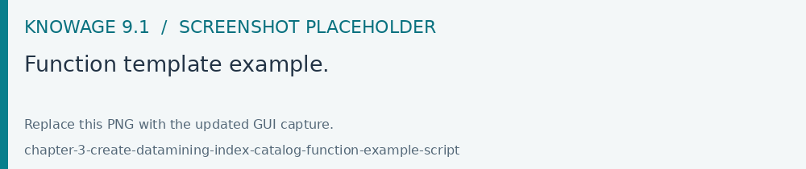
Fig. 476 Function template example.
The Output tab
Finally it is important to define what kind of outputs the function has produced, according to the script generated in the previous tab. Using the “Output“ tab shown below, you must specify:
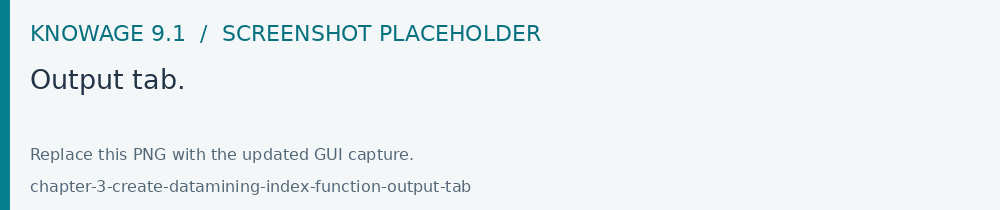
Fig. 477 Output tab.
Field Type: it can be ATTRIBUTE or MEASURE, and defines how the column will behave inside documents;
Type: it depends on the selected Field Type, it can be String, Number (float) or Date;
Use a function inside documents
Now that functions have been created, they must be used inside documents. In this section we will go through all the steps that allow users to execute a function with a specific dataset. This works both for the function preview and for the function used inside cockpits. Depending on the scenario, you will have two different dialogs.
When you are previewing the output of a function, you need to select the dataset you want to use to perform the preview. Therefore on the left card you will be able to select a dataset among the available ones. If the dataset has parameters you will be asked to insert values.
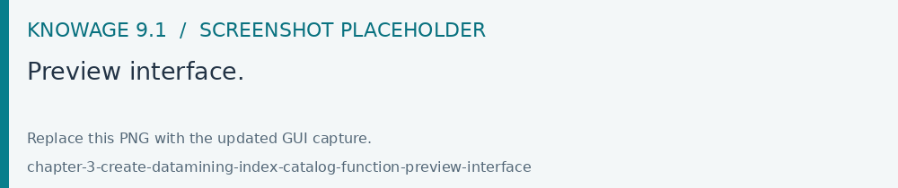
Fig. 478 Preview interface.
Instead, when you are creating a new widget that uses a function, you will need to click on the Add function link to access the configurator.
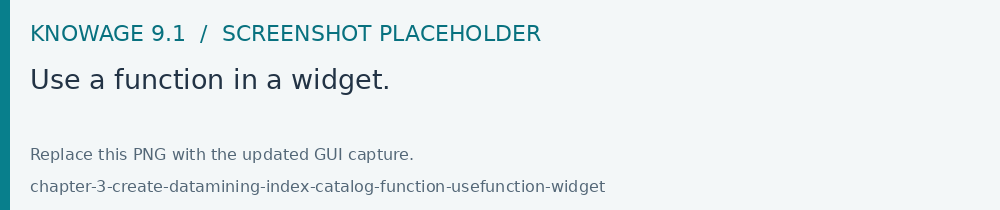
Fig. 479 Use a function in a widget.
Warning
You cannot use more than one function in the same widget
If you try do so you will get an exception.
Note
Functions are available only in some widgets
Table, crosstable, chart and custom chart.
If you are using a function inside a widget it means that you have already selected the dataset you want to use. Therefore on the left card you will be able to select a function among the available ones.
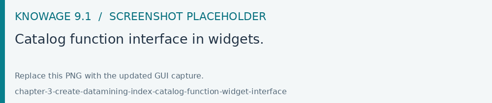
Fig. 480 Catalog function interface in widgets.
From this point forward the rest of the configuration is identical for both widget and preview. The first thing that you have to do is to bind the input columns of the function with the columns coming from the selected dataset.
The below image shows an example of a Logarithm function inside a document. Into the specific we are going to add a new column that will be the logarithm of a value of a specific column that already exists from the dataset.
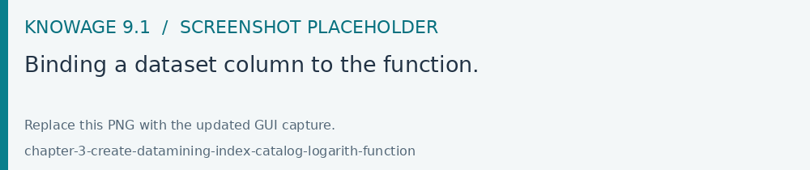
Fig. 481 Binding a dataset column to the function.
You already have to specify the Python environment and afterwards click the SAVE button to add the new logarithm column.
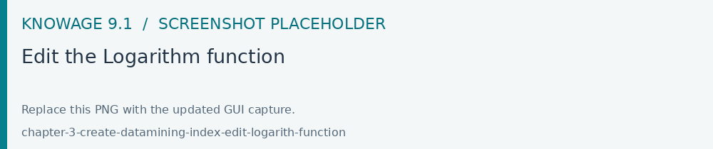
Fig. 482 Edit the Logarithm function
If you save the widget, the outcome shows the new column added to the widget.